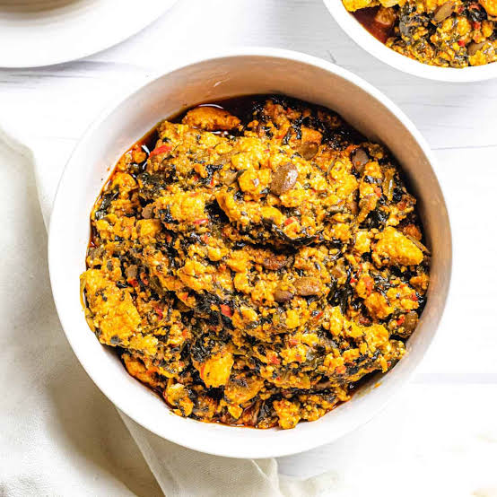

Egusi Soup!

Description
Meat pie is one of the things I look forward to eating when I go home, be it at tantalizers, Mr Bigs, Sweet Sensations or TFC the flavor profile is very similar. Crumbly exterior with meaty filling. The Nigerian Meatpie is comparable to Latin American Empanadas.
Ingredients
- Raw melon seed
- Meat e.g Turkey, chicken, beef
- Water
- Palm oil
- Vegetables
- Groundnut oil
- Maggi
- Salt
Steps
- Place a large saucepan on medium heat; add in the minced meat and onion. cook until meat is browned
- Add in the salt, carrots, potatoes and maggi. Stir in about a cup of water, cover and simmer until the potatoes is cooked through.
- Combined the flour with 1/2 cup of water, add the flour mix into this sauce (this will thicken the sauce). Add in the curry. Combine
- Remove from heat and set aside to cool
Home